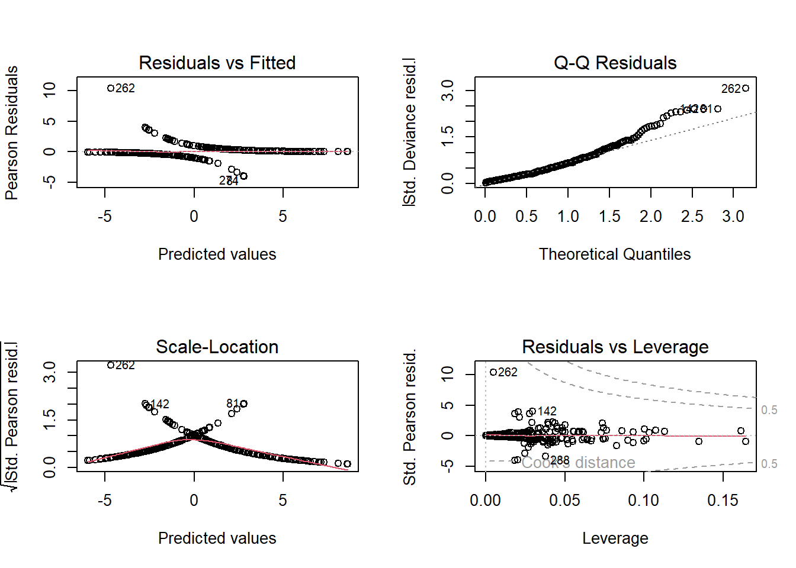
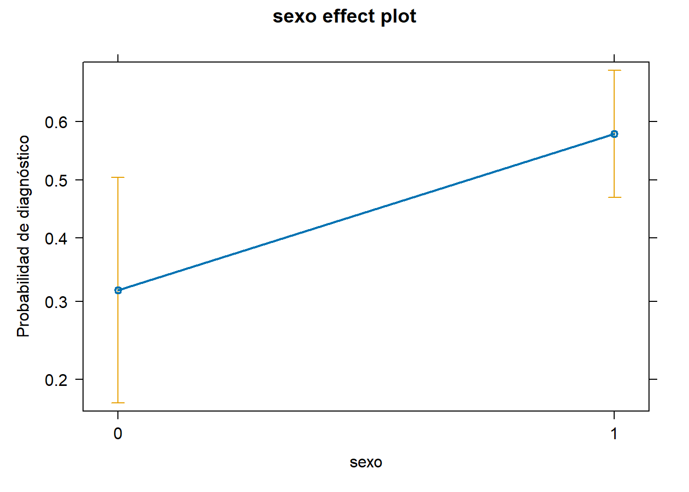
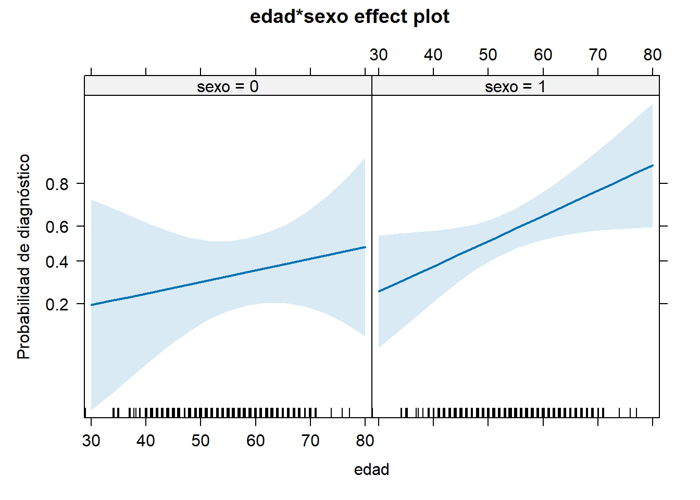
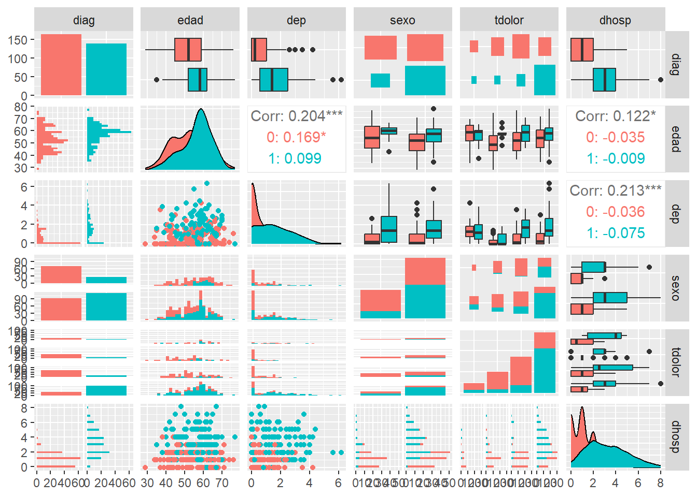
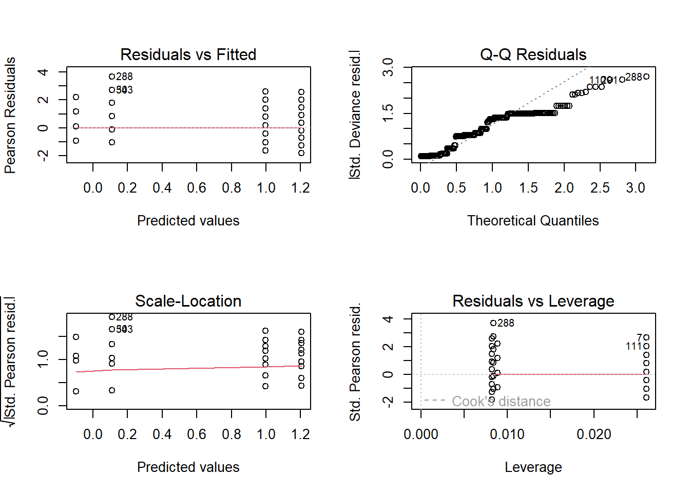

En el capítulo Capítulo 1 se ha introducido la idea de utilizar modelos estadísticos para intentar explicar, o predecir, una variable, a partir de otras que se supone influyen en su comportamiento. En dichos modelos lineales, la variable dependiente/respuesta considerada se supone continua, pero, en ocasiones, la variable dependiente es de otro tipo, discreta o categórica, y también se desea saber cómo influyen otras variables en ella. Por ejemplo:
cómo varía el número de días de hospitalización, en función de la enfermedad, sexo, edad, etc.
si se diagnostica a un paciente una enfermedad, o no, en función del sexo, valores de análisis en sangre, nivel de colesterol, etc.
Estos casos no se pueden abordar correctamente con el modelo de regresión lineal múltiple presentado, dado que la variable respuesta, al ser discreta, y sobre todo si es categórica, se alejan de la distribución Normal, que, como se ha visto, es un supuesto clave en regresión. Concretamente, algunas variables respuestas discretas se pueden modelizar mejor con una distribución de Poisson, como las variables que son conteos (número de … días de hospitalización, que sólo toman valores enteros no negativos). Las variables respuesta de tipo categórica dicotómica (como tener o no una enfermedad) se modelizan con una distribución de Bernoulli, muy alejada de la distribución Normal.
Para abordar estos problemas con variable respuesta no continua, se introduce en este capítulo el modelo lineal generalizado (GLM), que amplía el marco de la regresión lineal permitiendo que la variable dependiente siga cualquier distribución de probabilidad dentro de la familia exponencial (Normal, Binomial, Poisson, Gamma…). Además, este modelo admite que la varianza de los errores no sea constante (otro de los supuestos de la regresión lineal). Este capítulo se centra en dos escenarios concretos de GLM: la regresión logística, adecuada para variables respuesta binarias, y caso paradigmático de modelo de clasificación (supervisada), y la regresión de Poisson, ideal para variables respuesta de tipo conteo.
El calificativo generalizado tiene una connotación distinta a general. Es habitual encontrar modelo lineal general refiriéndose a lo que en este material se denomina modelo de regresión lineal múltiple.
Un par de referencias bibliográficas sobre este tema, que conjugan teoría y práctica, son las mencionadas en otros capítulos: James et al. (2013) y Fernández-Avilés y Montero (2024). Una referencia bibliográfica clásica sobre GLMs es McCullagh y Nelder (1989).
3.1 Modelo. Función de enlace
La forma de definir el modelo lineal generalizado difiere de la del modelo lineal de regresión. La idea detrás del modelo lineal de regresión es predecir valores de la variable respuesta \(Y\), a partir de la combinación lineal de los predictores \(X = (1, X_1, \ldots, X_k)\) y sus correspondientes parámetros estimables \(\beta = (\beta_0, \beta_1, \ldots, \beta_k)\). Si la variable \(Y\) no es continua, por ejemplo, es dicotómica, tomando valores 0 y 1, la predicción de una respuesta media obtenida para unos determinados valores de \(X_i\) difícilmente proporcionará siempre los valores 0 ó 1 (que son sus dos únicos valores admisibles). Es por ello que se introduce la denominada función de enlace, \(g\), que, escogida cuidadosamente, permitirá obtener tales valores. Matemáticamente: \[E(Y) = g^{-1}(X \beta),\] donde:
\(Y\) es el vector que contiene las respuestas, que puede seguir cualquier distribución de probabilidad de la familia exponencial: Normal (por tanto el modelo de regresión lineal es un caso particular de GLM), Bernoulli/binomial (utilizada en la denominada regresión logística), Poisson, Gamma, etc..
\(E(Y)\), es el valor esperado de la variable respuesta,
\(X \beta\), es el predictor lineal, la “estructura” que aportan los predictores, la forma funcional con la que se intentan explicar el comportamiento de la variable respuesta,
\(g(\cdot)\), la función de enlace, la artífice de la generalización, que relaciona la “estructura” con la distribución de probabilidad de la variable respuesta.
En McCullagh y Nelder (1989) se indican las funciones de enlace canónicas asociadas a cada distribución de probabilidad:
Podrían utilizarse otras funciones de enlace para cada distribución. Una habitual es la función probit para la Bernoulli.
Lo que no cambia respecto al modelo lineal de regresión son las etapas del análisis de un GLM:
Especificación: se predefine una estructura de las variables predictoras (predictor lineal), que pueden ser variables continuas, denominadas covariables, y/o variables cualitativas, denominadas factores.
Estimación: a partir de los datos muestrales se estiman los parámetros que determinan la relación entre la respuesta y el predictor lineal especificado.
Adecuación: se realiza la correspondiente diagnosis para comprobar la adecuación del modelo, o la necesidad de introducir cambios en la especificación.
Interpretación y predicción: El modelo final (adecuado) estimado se utiliza para interpretar, y, sobre todo, predecir nuevas respuestas. Dichas respuestas pueden ser, según sea el caso: valores \(\hat y_i\), probabilidades de ocurrencia \(\hat p_i\), etc. Este enfoque predictivo se utiliza en “Machine Learning”, que utiliza los errores de predicción como métrica para comparar modelos y elegir el que mejores predicciones realice para el problema entre manos.
3.2 GLM: regresión logística
De entre los distintos casos particulares de GLM, destaca el modelo de regresión logística. Se suele etiquetar como modelo de clasificación supervisada, de gran relevancia en multitud de campos científicos, como la Epidemiología, Psicología, Economía, etc. Hablar de clasificación proviene del hecho de que la variable respuesta \(Y\) que se quiere explicar o predecir consiste en la pertenencia, o no, a un determinado grupo de interés.
Se distingue entre clasificación supervisada y no supervisada cuando se conoce (o no) la clasificación de los datos de entrenamiento (en el conjunto de datos hay una variable que contiene dicho valor de clasificación, o no hay dicha variable). La regresión logística predomina sobre otros métodos de clasificación supervisada (Análisis Discriminante, \(K\)-vecinos más próximos (KNN), etc.) al poseer una interpretabilidad que no poseen los otros métodos (véase la imagen del Capítulo 2 de James et al. (2013))
3.2.1 Formulación
La aplicación de una regresión logística se asocia a una variable respuesta dicotómica. Habitualmente se consideran los valores: \(Y = 1\) si pertenece al grupo de interés (por ejemplo, diagnosticados de enfermedad X, morosos, piezas defectuosas, etc.), e \(Y = 0\) si no pertenece al grupo. Al igual que en el modelo de regresión múltiple, a partir de un conjunto de \(k\) variables explicativas \(X_1, X_2, \ldots, X_k\) se quiere predecir \(Y\), y clasificar al individuo en el grupo, o no.
Si se modeliza la variable respuesta, mediante una distribución de Bernoulli, dicha distribución quedará caracterizada por la probabilidad de pertenencia al grupo, \(p\). Así, \(P[Y = 1] = p\), \(P[Y = 0] = 1-p\), y \(E[Y] = p\). Con los datos disponibles (tanto de la variable \(Y\) como de las \(k\) variables explicativas) se estimará dicho valor, \(\hat{p}\), mejor dicho se estimará el modelo, con la intención de clasificar nuevos individuos o elementos (predecir el grupo al que pertenecerá), con la información que proporcionan los valores de las variables explicativas. En el proceso de estimación se determinaran aquellas variables que influyen significativamente en la clasificación.
En los GLMs se utilizan estimadores de máxima verosimilitud, pues los estimadores de mínimos cuadrados no son eficientes al no tener normalidad en la variable respuesta.
Según la formulación del modelo lineal generalizado: \[E[Y] = g^{-1}(\beta_0 + \beta_1 X_1 + \ldots + \beta_k X_k).\] Concretamente, para la regresión logística: \[ \text{logit}(p) = \log{ \Big(\dfrac{p}{1-p} \Big)} = \beta_0 + \beta_1 X_1 + \ldots + \beta_k X_k.\] Al estimar el modelo como si fuese una regresión múltiple, el predictor lineal no proporcionará valores plausibles de la variable respuesta \(Y\), sino que proporciona valores de logit(\(p\)), o log-odds, es decir, de la estimación del logaritmo del ratio (razón) entre la probabilidad de pertenecer al grupo de interés, \(p\), y la de no pertenecer a dicho grupo, \(1-p\), o, dicho en escala logarítmica, la diferencia entre pertenecer y no pertenecer al grupo. La ventaja de utilizar el logit, es que transforma los valores del predictor, que podrían estar en cualquier rango de valores, a valores para \(p\): \[ p = \dfrac{1}{1+e^{-(\beta_0 + \beta_1 X_1 + \ldots + \beta_k X_k)}},\] que tienden a 0 cuando el predictor lineal tiende a \(-\infty\) y a 1 cuando tiende a \(\infty\), por lo que la predicción es siempre un valor válido para una probabilidad. Si el predictor es \(0\), la probabilidad estimada es 0.5, y por tanto el odds es 1.
La función logística, en la parte central de su dominio, es prácticamente lineal. Esto implica que para modelizar respuestas de probabilidad moderada, el modelo lineal y el logístico no diferirán mucho. La contrapartida es que la probabilidad es una función no lineal de los predictores, sobre todo cuando las probabilidades se aproximan a 0 ó a 1, y la interpretación de los parámetros estimados se complica.
Como se ha mencionado, existen otras posibles funciones enlace, como la inversa de la distribución normal tipificada que conduce al denominado modelo probit (muy utilizado en Economía), o tomar la inversa de la distribución uniforme. La curva de la función logística y la de la función probit son muy similares, pero la logística tiene colas más pesadas (véase la figura 14.1 de la página 642 de Peña (2002) o representación de las funciones link).
3.2.2 Estimación de los parámetros
La estimación de los parámetros del modelo se realiza mediante máxima verosimilitud. Partiendo de una muestra de \(n\) observaciones, \((y_i, x_{1i}, \ldots, x_{ki}), i=1, \ldots, n,\) suponiendo independencia entre ellas, se puede expresar la función de probabilidad de la muestra, verosimilitud, \[P(y_1, \ldots, y_n) = \prod_{i=1}^n p_i^{y_i}(1-p_i)^{(1-y_i)}.\] Tomando logaritmos, \[\log(P(y_1, \ldots, y_n)) = \sum_{i=1}^n \big(y_i \log(p_i) + (1-y_i) \log(1-p_i)\big).\] Maximizando esta log-verosimilitud (log-likelihood) se obtienen los estimadores de los parámetros del modelo. Para encontrarlos, se visualiza en la fórmula anterior el predictor lineal: \[\begin{eqnarray}
LL(\beta) &=& \sum_{i=1}^n y_i \log\left(\dfrac{p_i(\beta)}{1-p_i(\beta)}\right) + \sum_{i=1}^n \log(1-p_i(\beta)) \\
&=& \sum_{i=1}^n y_i \beta^\top x_i - \sum_{i=1}^n \log(1+\exp(\beta^\top x_i)).
\end{eqnarray}\] Derivando respecto a los parámetros \(\beta\), \[\dfrac{\partial LL(\beta)}{\partial \beta} = \sum_{i=1}^n y_i x_i - \sum_{i=1}^n x_i \left(\dfrac{\exp(\beta^\top x_i)}{1+\exp(\beta^\top x_i)}\right),\] e igualando a cero, se obtiene el sistema de ecuaciones (no lineales) cuya solución son los estimadores de máxima verosimilitud: \[ \sum_{i=1}^n y_i x_i = \sum_{i=1}^n x_i \left(\dfrac{1}{1+\exp(-\beta^\top x_i)}\right) = \sum_{i=1}^n \hat y_i x_i.\]
Técnicamente, la serie de ecuaciones que hay que resolver no tienen solución analítica, por lo que se acude a métodos iterativos basados en el algoritmo de Newton-Raphson o en Scoring. En la práctica se alcanzan las condiciones de convergencia de uno u otro método en pocas iteraciones.
Cabe señalar que la estimación MV requiere de un tamaño de muestra considerable para obtener estimaciones fiables.
Deviance
Se define la deviance en la observación \(i\) como: \[d_i = -2\big(y_i \log(p_i) + (1-y_i) \log(1-p_i)\big).\]
Observación \(d_i>0\), y la constante 2 es arbitraria, escogida por conveniencia.
Refleja la desviación al modelo en la observación \(i\) (equivalente al residuo en regresión lineal). Para un buen ajuste del modelo, interesa encontrar el mínimo de la suma de las \(n\)deviance, Total deviance: \[D = \sum_i d_i\] Observando las fórmulas se infiere que maximizar la verosimilitud equivale a minimizar la deviance, \(D\).
Propiedades
A la vista de los estimadores MV obtenidos, los residuos del modelo, \(e_i = y_i - \hat y_i\), deben sumar cero y ser ortogonales a las variables explicativas \(x_i\). Aunque se da esta condición, análoga al modelo de regresión general, ahora el sistema de ecuaciones no es lineal en los parámetros \(\beta\). Por último, en McCullagh y Nelder (1989) puede verse como los estimadores MV tienen una distribución asintóticamente normal.
3.2.3 Contrastes. Adecuación.
La adecuación del modelo se puede realizar mediante contrastes de hipótesis. Por un lado se contrasta si un parámetro es o no significativo: \[ \left. \begin{eqnarray}
H_0 &:& \beta_i = 0 \\
H_1 &:& \beta_i \neq 0 \\
\end{eqnarray} \right\rbrace.\] Y por otro lado, se contrasta si el modelo en su conjunto es adecuado. Existen distintas alternativas.
Contraste de razón de verosimilitudes
Este contraste comparan la función de verosimilitud con y sin la variable asociada a dicho parámetro. Bajo el supuesto de que \(H_0\) es cierta, la diferencia de deviance entre el modelo sin \(\beta_i\) y con \(\beta_i\) es: \[D_0 - D_1 = -2L(\hat\beta_i^C) +2L(\hat\beta_i)=-2\dfrac{L(\hat\beta_i^C)}{L(\hat\beta_i)}\] que se distribuye (asintóticamente) siguiendo una \(\chi^2\) con 1 grado de libertad. De la última expresión se infiere el nombre del contraste… razón de verosimilitudes.
El resultado es extensible a un subconjunto de \(s\) parámetros \(\beta_i\), siguiendo en tal caso una \(\chi^2\) con \(s\) grado de libertad. Concretamente, se puede aplicar a todos los parámetros del modelo, comparándolo entonces con el modelo nulo.
Estadístico de Wald
El estadístico de Wald de cada parámetro se define como: \[\omega_i = \dfrac{\hat\beta_i}{sd(\hat\beta_i)},\] que se distribuye como una normal tipificada, en muestras grandes y bajo \(H_0\).
El estadístico de Wald es la raíz cuadrada del contraste \(\chi^2\) de Wald, de aquí que el estadístico se distribuya como una normal tipificada, pues al elevarlo al cuadrado se obtiene una distribución \(\chi^2\).
Contraste de Hosmer-Lemeshow
Un contraste global sobre el modelo, muy utilizado en la práctica, es el contraste de Hosmer-Lemeshow, que evalúa si las probabilidades predichas por la regresión logística se ajustan bien a las observaciones reales. \[ \left. \begin{eqnarray}
H_0 &:& \text{El modelo se ajusta bien a los datos} \\
H_1 &:& \hspace{1cm} \text{... no se ajusta...} \\
\end{eqnarray} \right\rbrace \]
Para comprobar la discrepancia entre las probabilidades predichas y las reales, utiliza un enfoque basado en la distribución \(\chi^2\). Agrupa los datos (ordenados por probabilidad predicha) en grupos (habitualmente en deciles, esto es, en 10 grupos de igual tamaño, si es posible). Construye la tabla de contingencia de frecuencias observadas y esperadas (según el modelo), y con ella se calcula el estadístico: \[\chi^2 = \sum_{g=1}^{G} \frac{(O_g - E_g)^2}{E_g (1 - \hat{p}_g)} \] donde:
\(G\) es el número de grupos considerado,
\(O_g\): número observado de eventos en el grupo \(g\),
\(E_g\): número esperado de eventos en el grupo \(g\),
\(\hat{p}_g\): probabilidad promedio predicha en el grupo \(g\).
El estadístico sigue una distribución \(\chi^2\) con \(G - 2\) grados de libertad, llevando a rechazar \(H_0\) para valores grandes del estadístico. En términos de p-valor, si es menor que 0.05, se rechaza \(H_0\), esto es, el modelo no ajusta bien los datos.
Este contraste permite detectar problemas de especificación del modelo, como omisión de variables relevantes o mala elección de la forma funcional. Hay que tener en cuenta que, como muchos otros contrastes, si la muestra es grande, puede detectar diferencias pequeñas como significativas. Además, el resultado depende del número de grupos considerados y se debe tener cuidado con las predicciones extremas.
3.2.4 Selección de variables
Hay situaciones en las que se dispone de numerosas variables explicativas que, en principio, podrían estar en el modelo y el objetivo es seleccionar cuáles de ellas realmente deben estar en el modelo, tanto a nivel estadístico como por el contexto del problema. En el Capítulo 5 se detallan distintos métodos de selección de variables y distintos criterios para llevar a cabo la selección.
En los modelos de regresión logística, además de las razones habituales para la selección de variables (multicolinealidad, etc.), es importante tener en cuenta que, si la proporción del evento de interés (prevalencia) es muy baja, pueden surgir problemas numéricos. Esto puede dar lugar a estimadores inestables, cuya magnitud depende en gran medida de los datos observados.
“Encontrar un modelo adecuado es en parte ciencia, en parte métodos estadísticos, en parte experiencia y sobre todo sentido común.” (María Durbán)
3.2.5 Diagnosis
Como se sabe, la diagnosis permite verificar los supuestos en los que está basado el modelo. Principalmente se busca verificar la linealidad entre los predictores y el logaritmo de las odds y la ausencia de interacción entre covariables y factores. Existe interacción cuando el efecto de la covariable no es constante para los distintos niveles del factor. Por lo que la ausencia de interacción implica que las “pendientes” sean paralelas, no cambien entre niveles del factor (véanse los gráficos de la Sección 3.4.2.3).
Cuando no se cumplen las hipótesis, pueden producirse distintos errores:
Coeficientes sesgados: los estimadores tienden a sobrestimar o subestimar sistemáticamente los efectos. Se pueden producir por una mala especificación del modelo (falta de variables relevantes, forma funcional incorrecta, existencia de interacciones,…).
Estimadores ineficientes: los errores estándar son elevados, lo que puede llevar a concluir erróneamente que un parámetro es cero.
Inferencia estadística no válida: las pruebas de significación pueden ser incorrectas.
Además, la diagnosis permite descubrir valores extremos en los predictores (puntos con alto leverage, \(h_i\)) o en la variable respuesta (outliers) que pueden distorsionar los resultados del modelo.
Análisis de residuos en regresión logística
Es habitual trabajar con las deviance, \(d_i\), y los residuos de Pearson. Estos últimos se definen como: \[r_i = \frac{y_i - n_i \hat{p}_i}{\sqrt{n_i \hat{p}_i (1 - \hat{p}_i)}},\] donde \(n_i\) es el número de individuos que comparten el mismo valor de los predictores. Con muestras grandes, los residuos de Pearson tienden a seguir una distribución normal tipificada, por lo que, si el modelo se ajusta bien se espera que los valores de \(r_i\) se encuentren en el intervalo \((-3,3)\).
Medidas de influencia
En regresión logística, existen varias métricas específicas para evaluar la influencia:
\(\Delta D\) de Hosmer-Lemeshow: mide el impacto de cada observación en el ajuste global del modelo. Equivalente al leverage de la regresión lineal.
\(\Delta \beta\) de Pregibon: estima cuánto cambiarían los parámetros si se eliminara una observación. Equivalente a la distancia de Cook de la regresión lineal.
3.2.6 Bondad del ajuste
El coeficiente de determinación, \(R^2\), definido para la regresión lineal debe adaptarse en el caso del modelo de regresión lineal generalizada. Entre los coeficientes de bondad de ajuste propuestos para el modelo de regresión logística, uno de los más utilizados es el estadístico: \[R^2 = 1 - \dfrac{D(\hat\beta)}{D(\beta_0)}\] donde \(\hat\beta\) se refiere a todos los parámetros menos \(\beta_0\). Si el ajuste fuese perfecto, \(D(\hat\beta) = 0\) y \(R^2=1\). Así, la falta de ajuste implica que \(R^2 < 1\) y es menor cuanto mayor sea la deviance total \(D(\hat\beta)\), hasta \(D(\hat\beta) = D(\beta_0)\) (cuando ninguna variable del modelo sea capaz de explicar la variable respuesta) que conduce a \(R^2=0\).
El estadístico anterior, reformulado en términos de verosimilitud, se conoce como Pseudo \(R^2\) de McFadden’s y es el encontrado habitualmente en las salidas de software: \[R^2 = 1 - \dfrac{LL(\hat\beta)}{LL(\beta_0)}\] donde \(LL(\cdot)\) se refiere a la log-verosimilitud del modelo correspondiente.
Otros coeficientes utilizados en la práctica son el \(R^2\) de Cox & Snell y el \(R^2\) de Nagelkerke. Ambos ajustan los valores del Pseudo \(R^2\) de McFadden’s para que tome valores entre 0 y 1, siendo el de Nagelkerke una versión corregida del de Cox & Snell.
3.2.7 Interpretación del modelo
En un modelo de regresión logística, \[ \text{logit}(p) = \log{ \Big(\dfrac{p}{1-p} \Big)} = \beta_0 + \beta_1 X_1 + \ldots + \beta_k X_k,\]
los valores estimados de los parámetros, \(\hat{\beta}_i\) son difíciles de interpretar, pues, proporcionan, ceteris paribus (manteniendo el valor de las demás variables), el cambio en el logit de \(p\), o log-odds, esto es el cambio en escala logarítmica de los llamados odds, \(\frac{p}{1-p}\), por unidad de cambio en \(x_i\).
La expresión ceteris paribus también se puede entender como estimaciones de \(\hat \beta_i\) obtenidas ajustando por los otros predictores incluidos en el modelo.
Al aplicar la exponencial a ambos términos se llega a: \[\dfrac{p}{1-p} = \exp(\beta_0 + \beta_1 X_1 + \ldots + \beta_k X_k) = \exp(\beta_0)\prod_{i = 1}^k \exp(\beta_i)^{X_i}.\] La interpretación se hace a través de las funciones \(\exp(\hat\beta_i)\) denominadas odds ratios. Indican cuánto se modifica la razón de probabilidades (la probabilidad de pertenecer al grupo de interés entre la de no pertenecer a dicho grupo) por unidad de cambio en la variable \(X_i\). Es decir, si se mantienen todas las variables en los mismos valores (ceteris paribus), menos una variable que cambia en 1 unidad de un individuo/elemento a otro, todas las exponenciales darán como resultado 1 excepto el término \(\exp(\hat\beta_i)\), y \(\exp(\hat\beta_0)\) que no depende de las \(x_i\) (si el cambio es en \(c\) unidades, se tiene \(\exp(c\hat\beta_i)\)). Y si cambian dos variables en una unidad, aparecen ambos términos multiplicándose. Así los efectos en el modelo de regresión logística son multiplicativos: si \(\exp(\hat{\beta}_i)<1\), entonces disminuye la probabilidad de pertenecer al grupo de interés, aumentando dicha probabilidad cuando \(\exp (\hat{\beta}_i)>1\), ceteris paribus.
Que los efectos, de los factores o covariables sobre la respuesta, sean multiplicativos proviene del logaritmo (neperiano) que aparece en la función de enlace canónica asociada a la distribución Bernoulli. Este es otro punto en el que difiere de la regresión lineal, en la que los efectos son aditivos.
Los efectos multiplicativos también se dan en el modelo de regresión de Poisson (que se ve más adelante en este capítulo), al tener también el logaritmo en la función de enlace.
Predictor en forma de diferencias
El predictor lineal también se puede reescribir en forma de diferencias con respecto a la media de cada variable: \[\text{logit}(p) = \beta_0 + \beta_1 (x_{1i} - \bar{x}_1) + \ldots + \beta_k (x_{ki} - \bar{x}_k).\] Así, la ordenada en el origen, \(\beta_0\), se puede interpretar como el valor del logit cuando las variables son iguales a sus medias. En tal caso, si \(\beta_0 = 0\), se tendría que logit\((p) = 0\) lo que conduce a \(1 = p_i/(1-p_i)\) y por lo tanto \(p_i = 0.5\). Y si \(\beta_0 \neq 0\) se tiene que \(p_i = 1/(1 + \exp(-\beta_0))\).
3.2.7.1 Intervalos de confianza
Además de los parámetros estimados, o de los OR, se pueden proporcionar sus intervalos de confianza que aportan información adicional. Los IC para los parámetros del modelo, \(\beta_i\), se pueden calcular utilizando los errores estándar y asumiendo que sus estimadores siguen una distribución normal. Los IC para el odds ratio se calcula tomando exponenciales: \[\exp\left[ \hat{\beta}_1 \pm t_{gl,\alpha/2} \times sd(\hat{\beta}_1) \right].\] Para obtener el intervalo de confianza para las probabilidades, basta con utilizar la función logística, que relaciona el logit y la probabilidad:
La interpretación de los parámetros de los factores es diferente a la de las covariables, como en regresión lineal. Supóngase que sólo se tiene una variable predictora: \[log \left( \dfrac{p}{1-p} \right) = \beta_0 + \beta_1 X\] Si es dicotómica, codificada con 0 y 1, si \(X = 0\), el logit es \(\beta_0\), y si \(X = 1\) el logit es \(\beta_0 + \beta_1\). Por tanto, \(\beta_1\) resulta ser la diferencia en el logit entre los dos grupos.
También se puede ver de otra forma: \[ \dfrac{p}{1-p} = e^{\beta_0 + \beta_1 X} = e^{\beta_0} e^{\beta_1 X}.\] Si \(X=0\), el odds es \(e^{\beta_0}\), y si \(X=1\), el odds es \(e^{\beta_0}e^{\beta_1}\). Así, el odds ratio (la razón entre los odds, razón de posibilidades) entre ambos grupos es: \[ \text{OR} = \dfrac{p/(1-p) |_{X=1}}{p/(1-p) |_{X=0}} = \dfrac{e^{\beta_0 + \beta_1}}{e^{\beta_0}} = e^{\beta_1}.\] Por lo tanto, el odds ratio asociado a una variable dicotómica es simplemente la exponencial del parámetro asociado a dicha variable. Si \(\beta_1>0\), entonces \(e^{\beta_1} > 1\), y la probabilidad de pertenecer al grupo de interés es mayor en el grupo con \(X=1\) que en el grupo con \(X=0\), y viceversa.
El valor neutro del OR es el 1, que indica que las dos categorías comparadas presentan la misma probabilidad de ocurrencia. El valor mínimo posible del OR es 0, mientras que el máximo teóricamente posible es infinito. Un OR inferior a 1 se interpreta como que el evento es menos frecuente en la categoría o grupo de interés en comparación con el grupo o categoría de referencia. Por ejemplo, un OR = 3 indica que el evento es tres veces más probable en la categoría \(X = 1\) que en la categoría \(X = 0\).
Diferencias con el Riesgo Relativo
El odds ratio (OR) y el riesgo relativo (RR) son dos medidas estadísticas utilizadas para cuantificar la asociación entre una variable y una respuesta, pero tienen diferencias clave en su interpretación y cálculo.
El riesgo relativo se define como: \[RR = \frac{P(Y = 1 | X = 1)}{P(Y = 1 | X = 0)},\] es decir, es una medida de cuánto más probable es encontrar el evento (\(Y=1\)) entre los individuos con \(X = 1\) que entre aquellos con \(X = 0\).
El OR se puede aproximar por el RR, pero es necesario que tanto \(P(Y = 1 \mid X = 1)\) como \(P(Y = 1 \mid X = 0)\) sean pequeñas.
El valor (y la interpretación) de estas medidas es diferente: \(RR = 2\) indica que el riesgo de evento en el grupo \(X=1\) es el doble que en el grupo \(X=0\).
Mientras que el \(OR = 3\) sugiere que las odds del evento son 3 veces mayores en el grupo \(X=1\). Y la diferencia se hace más notable cuando los riesgos no son pequeños.
Pregunta
Invente otros números que hagan que el RR y el OR sean similares (o iguales). ¿La interpretación es también similar (o igual)?
Predictores cualitativos con más de dos categorías
Si la variable cualitativa tiene más de dos categorías, la solución se basa en crear variables ficticias (dummies) para cada categoría, tomando una de las categorías como referencia (véase la Sección 1.4.3.1). De este modo, se aplica la interpretación anterior de variable dicotómica en cada comparación entre una categoría y la categoría de referencia.
Por ejemplo, si la variable \(X\) tiene tres categorías (A, B y C), se toma una de ellas como referencia, por ejemplo C, y se crean dos variables ficticias:
\(X_1 = 1\) si la categoría es A, y 0 en otro caso,
\(X_2 = 1\) si la categoría es B, y 0 en otro caso.
El modelo quedará: \[\text{logit}(p) = \beta_0 + \beta_1 X_1 + \beta_2 X_2.\] Así, el OR asociado a la categoría A es \(e^{\beta_1}\), que compara la categoría A con la C, y el OR asociado a la categoría B es \(e^{\beta_2}\), que compara la categoría B con la C. Y el efecto de la categoría C queda incluido en la ordenada en el origen, \(\beta_0\).
3.2.8 Predicción. Curva ROC
La aplicación más común de la regresión logística es utilizarla como método de clasificación, basándose en los valores de las variables explicativas que influyen en el modelo. Esta predicción de clasificación se realiza estableciendo un umbral de probabilidad (estimada), que determina la pertenencia, o no, al grupo de interés. Por ejemplo, se podría clasificar a un individuo en el grupo de interés si la probabilidad estimada supera 0.6, y clasificarlo en el otro grupo en caso contrario.
Para evaluar la eficacia del modelo en esta tarea de clasificación, se recurre al análisis de los aciertos y errores cometidos, en función del umbral de probabilidad escogido. Para ello, se introducen dos métricas fundamentales: la sensibilidad y la especificidad, que se calculan a partir de la matriz de confusión. Con un ejemplo se ilustra su obtención. Supóngase que se tiene una prueba rápida para diagnosticar una enfermedad, que no siempre acierta. Y por otro lado, supóngase que se conoce realmente quién tiene esa enfermedad. Esquemáticamente:
Matriz de confusión
Enfermedad Presente
Enfermedad Ausente
Prueba Positiva
Verdadero Positivo (VP)
Falso Positivo (FP)
Prueba Negativa
Falso Negativo (FN)
Verdadero Negativo (VN)
La sensibilidad, también conocida como tasa de verdaderos positivos, indica la proporción de casos de interés correctamente identificados por el modelo: \[ \text{sensibilidad} = \dfrac{VP}{VP+FN}\]
Por su parte, la especificidad, o tasa de verdaderos negativos, refleja la capacidad del modelo para identificar correctamente los casos negativos: \[ \text{especificidad} = \dfrac{VN}{VN+FP}\]
Estas métricas pueden representarse gráficamente para distintos valores del umbral de clasificación (puntos de corte), lo que permite observar cómo varían la sensibilidad y la especificidad a lo largo del rango de probabilidades (de 0 a 1). La herramienta habitualmente utilizada para este análisis es la curva ROC (Receiver Operating Characteristic), que muestra la sensibilidad frente a la tasa de falsos positivos (es decir, \(1 -\)especificidad) para diferentes puntos de corte (umbrales). Esta representación se ha convertido en un estándar para evaluar modelos de clasificación. Un clasificador aleatorio presenta una curva ROC coincidente con la diagonal, mientras que un clasificador perfecto tiene una curva en ángulo recto que abarca toda la parte superior del gráfico por encima de la diagonal. La curva ROC del resto de modelos de clasificación se moverá entre ellas.
El área bajo la curva, AUC (Area Under the Curve), asociado a una curva ROC proporciona una medida cuantitativa del rendimiento del modelo. El valor máximo de AUC es 1, indicando un método de clasificación perfecto, , mientras que un modelo sin capacidad predictiva (equivalente a una clasificación aleatoria) tendría una curva ROC alineada con la diagonal y un AUC de 0.5. Cuanto más próximo a 1 esté el valor de AUC mayor capacidad discriminante tiene el modelo. Esta métrica resulta especialmente útil para comparar distintos modelos de regresión logística o incluso otros algoritmos de clasificación.
3.3 GLM: regresión de Poisson
Cuando la variable respuesta es razonable modelizarla con la distribución de Poisson, por ejemplo, cuando es de tipo conteo, se puede plantear una regresión de Poisson, cuyo objetivo es explicar dicha variable en función de \(k\) variables explicativas \(X_1, X_2, \ldots, X_k\).
En este caso, la distribución de Poisson queda caracterizada por su esperanza matemática, \(\lambda\), que coincide también con su varianza. Este hecho impone un supuesto fundamental de la regresión de Poisson: que la varianza condicional de la variable respuesta es igual a su esperanza condicional. De ser mayor la varianza se tiene el problema de sobredispersión.
Con los datos disponibles se estimará el modelo, también mediante máxima verosimilitud, con la intención de predecir valores de la variable respuesta \(\hat{Y}\) con la información que proporcionan los valores de las variables explicativas significativas. Aquí tampoco tiene cabida el modelo de regresión lineal, porque, entre otras razones, las predicciones podrían arrojar valores negativos, o no enteros, o la varianza de la variable respuesta depende de la media (heterocedasticidad).
Dado que la función de enlace es de tipo logarítmico, los efectos de las variables explicativas son también multiplicativos, como en la regresión logística.
Como contraste de bondad de ajuste se utiliza el contraste de razón de verosimilitudes, con el que hay que tener cuidado dado que su validez radica en que, de cada valor de la variable respuesta, se tengan al menos 5 observaciones.
Respecto a la diagnosis, es habitual utilizar los residuos estandarizados, que en este caso resultan ser: \[r_i = \dfrac{y_i - \hat{y}_i}{\sqrt{\hat{y}_i}},\] y siguen una distribución normal tipificada, en muestras grandes y si el modelo se ajusta bien a los datos.
La utilidad de la regresión de Poisson radica en su mejor adecuación a variables respuesta de naturaleza poco frecuente (número entero pequeño), asimétricas, frente a variables de naturaleza común, generalmente simétricas, que se distribuyen según una distribución normal. Ofrece predicciones más correctas que una regresión lineal “gaussiana”. En medicina o biología se utiliza para estudiar variables relacionadas con las supervivencia/muerte de organismos, o la reproducción (número de crías); en ingeniería se estudia para fallos en sistemas mecánicos, etc.
3.3.1 Alternativas
Un modelo de regresión de Poisson puede no ser adecuado porque el modelo esté mal especificado. El primer paso es revisar si se han omitido variables relevantes o si se ha elegido una forma funcional inapropiada. Por ejemplo, excluir una variable predictora importante puede inducir síntomas de sobredispersión.
Asegurada la correcta especificación, si existe sobredispersión, puede considerarse ajustar una regresión binomial negativa, que comparte la misma estructura en la esperanza matemática que la regresión de Poisson y cuenta con un parámetro adicional para modelar la sobredispersión, que se puede contrastar mediante una prueba de razón de verosimilitud. Este modelo de regresión puede considerarse una generalización de la regresión de Poisson.
Una causa frecuente de sobredispersión es el exceso de ceros en los datos, cuando se cree que sólo algunos de los ceros son verdaderos. Los modelos inflados por ceros (zero-inflated model) intentan contemplar dicho exceso de ceros, estimando dos modelos simultáneamente: uno para el modelo de conteo y otro para el exceso de ceros. Por otro lado, si el diseño del estudio impide que se registren ceros —como puede ocurrir con el número de días de hospitalización, que puede no ser cero—, entonces conviene emplear un modelo truncado en ceros.
3.4 Caso práctico: cleveland
Para obtener regresiones lineales generalizadas con R, se puede utilizar la función glm() del paquete stats (cargado por defecto al iniciar sesión). Con ella se obtienen tanto la regresión logística, como la regresión de Poisson.
3.4.1 Análisis exploratorio
El caso práctico se basa en los datos cleveland incluidos en el paquete CDR y estudiados en Casero-Alonso y Durbán (2024). Se pueden ver otros ejemplos, con otros conjuntos de datos, en James et al. (2013) (lab del capítulo 4).
diag edad dep sexo tdolor dhosp
0:164 Min. :29.00 Min. :0.00 0: 97 1: 23 Min. :0.000
1:139 1st Qu.:48.00 1st Qu.:0.00 1:206 2: 50 1st Qu.:1.000
Median :56.00 Median :0.80 3: 86 Median :2.000
Mean :54.44 Mean :1.04 4:144 Mean :2.033
3rd Qu.:61.00 3rd Qu.:1.60 3rd Qu.:3.000
Max. :77.00 Max. :6.20 Max. :8.000
Como se puede apreciar, en este caso se tienen 6 variables, 3 de ellas factores. Para la regresión logística, la variable dicotómica que interesa explicar es diag, el diagnóstico de accidente coronario (consultando la ayuda se puede ver que 1 significa sí diagnosticado de accidente coronario), a partir del resto de variables: edad, dep (depresión en el segmento ST inducida por ejercicio en relación al reposo), sexo, tdolor(tipo de dolor), dhosp (días de hospitalización). Para la regresión de Poisson, la variable discreta a explicar es dhosp, en función del resto (incluida diag).
pairs(cleveland, lower.panel =NULL)
La visualización de pairs() muestra los gráficos de dispersión de cada par de variables, sólo del panel superior para mostrar diag como variable respuesta (primera fila del primer gráfico depairs()).
Un detalle llamativo es que, a pesar de que diag toma valores 0 y 1, en los gráficos se muestra con valores 1 y 2. ¿Sabría cómo cambiarlo? Consulte Casero-Alonso y Durbán (2024).
3.4.2 Regresión logística
Se va a ajustar el modelo de regresión logística indicado anteriormente: diag ~ . (en formato de fórmula de R).
3.4.2.1 Estimación
Se utiliza la función glm(), que tiene la misma sintaxis que lm(), pero se debe especificar el argumento family. Concretamente,
para ajustar una regresión logística: family = binomial.
Call:
glm(formula = diag ~ ., family = binomial, data = cleveland)
Coefficients:
Estimate Std. Error z value Pr(>|z|)
(Intercept) -8.15790 1.62589 -5.017 5.23e-07 ***
edad 0.05015 0.02247 2.232 0.02564 *
dep 0.92345 0.20269 4.556 5.21e-06 ***
sexo1 1.15434 0.44938 2.569 0.01021 *
tdolor2 0.57374 0.83593 0.686 0.49250
tdolor3 0.22284 0.71943 0.310 0.75676
tdolor4 2.54786 0.70137 3.633 0.00028 ***
dhosp 1.10953 0.16810 6.600 4.10e-11 ***
---
Signif. codes: 0 '***' 0.001 '**' 0.01 '*' 0.05 '.' 0.1 ' ' 1
(Dispersion parameter for binomial family taken to be 1)
Null deviance: 417.98 on 302 degrees of freedom
Residual deviance: 183.30 on 295 degrees of freedom
AIC: 199.3
Number of Fisher Scoring iterations: 6
Con la función summary() se obtienen las estimaciones de los parámetros del predictor lineal, sus errores estándar, los estadísticos de Wald (columna z value, que, como se sabe, es el cociente entre las dos columnas anteriores) y se puede ver qué variables resultan significativas y cuales no. A diferencia de la regresión lineal, las estimaciones de los parámetros obtenidos no se suelen interpretar directamente (están en escala logarítmica). Se interpretarán como odds ratios (véase Sección 3.4.2.5).
3.4.2.2 Adecuación del modelo
En la salida del summary() también aparecen las deviance del modelo nulo y del ajustado, junto con sus grados de libertad. También el AIC del modelo ajustado (véase Sección 5.2). Estos valores nos permiten valorar la adecuación del modelo y compararlo con otros modelos.
Con los valores de deviance se puede realizar el contraste de razón de verosimilitudes (Sección 3.2.3), entre el modelo más elaborado y el modelo nulo, cuyo estadístico se sabe que se distribuye siguiendo una \(\chi^2\). Este contraste se obtiene en R con la función anova():
En las salidas anteriores se puede observar como la “ganancia” en Residual deviance varía al incluir cada variable (en un orden especificado distinto) al modelo que ya contiene las anteriores variables. La mayor disminución (y por tanto ganancia) se da al incluir primero la variable dhosp (en lugar de incluir primero edad). Aunque el resultado final es el mismo, es óptima la inclusión de todas las variables (en cualquiera de los dos órdenes), llegando a la misma Residual deviance
Contraste de Hosmer-Lemeshov
Para obtener el contraste de Hosmer-Lemeshov, se acude al paquete ResourceSelection.
library(ResourceSelection)
ResourceSelection 0.3-6 2023-06-27
hoslem.test(glm.diag$y, glm.diag$fitted.values, g =10)
Hosmer and Lemeshow goodness of fit (GOF) test
data: glm.diag$y, glm.diag$fitted.values
X-squared = 9.4523, df = 8, p-value = 0.3056
Pregunta
¿A qué conclusión se llega con el contraste de Hosmer-Lemeshov?
3.4.2.3 Diagnosis
Como en regresión lineal, se puede realizar una diagnosis gráfica del modelo.
par(mfrow =c(2,2))plot(glm.diag)

Los 4 gráficos obtenidos son los mismos que en regresión lineal, pero llama la atención la “peculiar” disposición de los puntos en ellos. Sobre todo en los gráficos Residuals vs Fitted y Scale-Location. Esto se debe a que cada residuo corresponde a una de las dos posibles respuestas. En todos los gráficos se etiqueta a la observación 262, posible atípico, aunque no llega a tener un gran leverage ni un valor significativo de la distancia de Cook (medidas de influencia). Los residuos de deviance y de Pearson se pueden obtener con la función residuals():
Deviance.resid <-residuals(glm.diag, type ="deviance")Pearson.resid <-residuals(glm.diag, type ="pearson")Deviance.resid[262]; Pearson.resid[262]
Tarea
Para comprobar o descartar que sea un valor influyente en la regresión logística, elimine dicha observación del conjunto de datos y vuelva a estimar el modelo y representar los gráficos de diagnóstico.
Para la diagnosis del modelo de regresión logística también se puede utilizar la función glm.diag.plots() del paquete boot. Que presenta 2 gráficos similares a los anteriores y otros 2 distintos, en los que se muestran el leverage y el estadístico de Cook.
library(boot)glm.diag.plots(glm.diag)
Las medidas de influencia comentadas en Sección 3.2.5, se puede obtener con la función influence.measures().
Se debe comprobar que las variables factor, aquí sexo y tdolor, no interaccionen con las covariables. Si no hay interacción, se tendrán “pendientes” paralelas. En el caso de que haya interacción, las “pendientes” cambiarán según los niveles de los factores.
Obviamente se comprobará para aquellas variables para las que tiene sentido práctico esa interacción, por lo que, en la práctica, en el campo “bio”, el factor sexo tiene casi siempre sentido analizarlo.
Se debe introducir una interacción cada vez.
glm.diag.int <-glm(diag ~ edad * sexo + dep + tdolor + dhosp,data = cleveland,family = binomial)anova(glm.diag, glm.diag.int, test ="Chisq")
Analysis of Deviance Table
Model 1: diag ~ edad + dep + sexo + tdolor + dhosp
Model 2: diag ~ edad * sexo + dep + tdolor + dhosp
Resid. Df Resid. Dev Df Deviance Pr(>Chi)
1 295 183.30
2 294 182.92 1 0.38285 0.5361
Pregunta
Compruebe si existe o no interacción en el resto de casos. ¿Qué conclusión obtiene?
Los gráficos que se pueden obtener para representar el efecto de dicha interacción sirven para ilustrar el concepto de “pendientes” paralelas (o no).
library(effects)
Cargando paquete requerido: carData
lattice theme set by effectsTheme()
See ?effectsTheme for details.
plot(effect("sexo", glm.diag.int), ylab ="Probabilidad de diagnóstico")
NOTE: sexo is not a high-order term in the model

plot(effect("edad:sexo", glm.diag.int),ylab ="Probabilidad de diagnóstico")

3.4.2.4 Bondad de ajuste
Las medidas más habituales de bondad de ajuste para un modelo de regresión logística se pueden obtener con:
library(DescTools)PseudoR2(glm.diag, which ="all")
Proporciona tanto la Pseudo \(R^2\) de McFadden, como las otras comentadas en la Sección 3.2.6: la de Cox y Snell y la de Nagelkerke. Esta última es más efectiva ya que la de Cox y Snell nunca puede alcanzar el 1.
El Pseudo \(R^2\) de McFadden se puede obtener “a mano” así:
glm.null <-glm(diag ~1, data = cleveland, family ="binomial", )1-logLik(glm.diag) /logLik(glm.null)
'log Lik.' 0.5614544 (df=8)
3.4.2.5 Interpretación
Como se ha mencionado, no se interpretan directamente las estimaciones de los parámetros del predictor lineal, sino los odds ratios, que se obtienen con:
Así, \(e^{\hat\beta_{\mathrm{edad}}} =\) 1.0514241, indica que, ceteris paribus y en media, una diferencia de 1 año de edad (los datos de edad vienen dados en años) aumenta el odds de ser diagnosticado de la enfermedad, en un 5%. Es decir, dos pacientes con el resto de valores iguales que se diferencia en 1 año de edad, el mayor tiene una probabilidad ligeramente mayor de ser diagnosticado. Si se lleva a una diferencia de 15 años, ceteris paribus, el odds aumenta en un \(e^{15\hat\beta_{\mathrm{edad}}}-1 =\) 112.2%, es decir, más que se duplica el odds ratio (lo que se ve mejor observando que \(e^{15\hat\beta_{\mathrm{edad}}} =\) 2.1).
Por su parte, la variable dep tiene un odds ratio por encima de 2, y las variables sexo y dhosp por encima de 3, indicando que un aumento de una unidad en dichas variables más que duplica o triplica el odds del paciente. Para la variable sexo no tiene sentido como aumento de una unidad, sino el pertenecer a un sexo o a otro, al ser una variable factor (si se consulta la ayuda de los datos se ve que son los hombres los que, en media y ceteris paribus, más que triplican el odds de las mujeres).
Pregunta
¿Cómo se interpretan las estimaciones de la variable tdolor?
Intervalos de confianza
Los intervalos de confianza para los odds ratios se obtienen tomando exponenciales de los intervalos de confianza para los parámetros del modelo:
En regresión lineal, que un parámetro sea significativo se interpreta como significativamente distinto de cero, por el hecho de que el modelo considera efectos aditivos de las variables. El modelo de regresión logística es de efectos multiplicativos y, por ello, el valor “neutro” es el 1. Así, un parámetro significativo se interpreta ahora como efecto significativamente distinto de 1 en el odds ratio (equivalentemente, el IC no contendrá el valor 1). Una estimación significativa, de signo negativo (positivo), del parámetro del predictor, por la transformación exponencial, se convierte en un efecto significativo, por debajo (encima) de 1, en el odd ratio asociado a dicho predictor. Dicho de otro modo, disminuye (aumenta) la probabilidad de pertenecer al grupo de interés.
Riesgo relativo
La prevalencia del evento (diagnóstico de enfermedad) en la muestra es:
mean(as.numeric(cleveland$diag)-1)
[1] 0.4587459
Lo que, probablemente, implica que las probabilidades del evento no serán pequeñas en los grupos que se quieran investigar, por ejemplo, en sexo. Y, por lo tanto, los OR diferirán de los RR.
Para calcular los RR, construimos la tabla de contingencia entre ambas variables:
Tabla <-table(Diagnostico = cleveland$diag, Sexo = cleveland$sexo)addmargins(Tabla)
Sexo
Diagnostico 0 1 Sum
0 72 92 164
1 25 114 139
Sum 97 206 303
Así las probabilidades de diagnóstico para hombres y mujeres son:
De nuevo, al no ser pequeña la probabilidad de diagnóstico, el OR es distinto (mayor) al RR.
3.4.2.6 Predicción
Con la función predict() se pueden obtener predicciones, dados nuevos valores de los predictores. El argumento type admite varias opciones: por defecto type = "link" genera el logit (log odds), type = "response" genera probabilidades del tipo \(P(Y = 1|X)\). Si no se proporcionan nuevos datos se calculan las predicciones para los datos utilizados para ajustar el modelo de regresión logística (fitted.values).
pred.diag.prob <-predict(glm.diag, type ="response") #probabilidadespred.diag.prob[1:10]
Como se puede apreciar probabilidades bajas se asocian a predictores negativos, mientras que probabilidades altas se asocian a predictores positivos. Para obtener una predicción concreta se deben proporcionar valores a las variables explicativas incluidas en el modelo ajustado:
paciente1 <-data.frame(edad =50, dep =3, sexo ="0", tdolor ="1", dhosp =1)paciente2 <-data.frame(edad =50, dep =3, sexo ="1", tdolor ="1", dhosp =2)pacientes <-data.frame(rbind(paciente1, paciente2))predict(glm.diag,newdata = pacientes,type ="link")
La diferencia entre los dos pacientes se localiza en sexo y que uno de ellos tiene 1 día más de hospitalización, lo que tiene un gran impacto en la respuesta predicha, ya sea la predicción de su log(odds) o la de la probabilidad de ser diagnosticado/a con la enfermedad.
Intervalos de confianza
Los intervalos de confianza para las predicciones se pueden obtener con la función predict(), utilizando el argumento se.fit = TRUE, que proporciona el error estándar de las predicciones. Con ello, se pueden construir los intervalos de confianza para el logit y para las probabilidades, aplicando la función logística a los límites del intervalo de confianza del logit.
Con las predicciones anteriores no se está realizando clasificación alguna. Para ello se debe escoger un valor umbral de probabilidad, o punto de corte, con el que clasificar, bien escogido arbitrariamente, bien obtenido por el análisis de la curva ROC. Aquí, se toma el valor de ejemplo mencionado en la parte teórica: 0.6.
Matriz de confusión
Ahora se pueden comparar estas predicciones con las etiquetas verdaderas de la variable diag, esto es, construir la matriz de confusión (que depende del punto de corte escogido)
diag
pred.diag 0 1 Sum
0 153 24 177
1 11 115 126
Sum 164 139 303
La clasificación es bastante satisfactoria, se han obtenido 153+115 aciertos (diagonal principal de la matriz de confusión) y sólo se han cometido 24+11 errores de clasificación, lo que supone una tasa de error de 35/303 (precisión de 268/303):
mean(pred.diag != cleveland$diag)
[1] 0.1155116
mean(pred.diag == cleveland$diag)
[1] 0.8844884
Vista la proporción, más de 1 de cada 10 casos clasificados erróneamente, los resultados no parecen tan satisfactorios. Aunque, sin duda, es mejor que un clasificador aleatorio:
pred.diag.aleat 0 1 Sum
0 73 68 141
1 91 71 162
Sum 164 139 303
1-mean(pred.diag.aleat == cleveland$diag)
[1] 0.5247525
Sensibilidad y especificidad
Además de la precisión (porcentaje total de aciertos) o la equivalente tasa de error, de la matriz de confusión se pueden obtener las métricas sensibilidad y especificidad, entre otras.
library(caret)
Cargando paquete requerido: ggplot2
Cargando paquete requerido: lattice
Adjuntando el paquete: 'caret'
The following objects are masked from 'package:DescTools':
MAE, RMSE
Confusion Matrix and Statistics
pred.diag 0 1
0 153 24
1 11 115
Accuracy : 0.8845
95% CI : (0.843, 0.9182)
No Information Rate : 0.5413
P-Value [Acc > NIR] : < 2e-16
Kappa : 0.7657
Mcnemar's Test P-Value : 0.04252
Sensitivity : 0.8273
Specificity : 0.9329
Pos Pred Value : 0.9127
Neg Pred Value : 0.8644
Prevalence : 0.4587
Detection Rate : 0.3795
Detection Prevalence : 0.4158
Balanced Accuracy : 0.8801
'Positive' Class : 1
Nota: Es importante la indicación de la clase positiva, dado que el cálculo de la sensibilidad, especificidad y valores relaciones depende de ello.
Los resultados arrojan unos valores de precisión, sensibilidad y especificidad buenos.
Las referencias de valores “buenos” son subjetivas. Y sujetas al contexto. Habitualmente por encima del 80% son buenos datos. Pero hay que tener en cuenta los costes y riesgos de una mala clasificación (por ejemplo, dar un tratamiento médico cuando no hace falta, y no darlo cuando sí hace falta).
Es importante indicar que son necesarias las distintas métricas, dado que un buen dato de precisión podría estar ocultando información muy importante. Con un ejemplo de un caso extremo se puede ilustrar. Se tienen diez pacientes, 2 de ellos están enfermos, y 8 están sanos. Si un modelo de regresión logística clasifica a todos los pacientes como sanos. Entonces, la precisión y la especificidad serían del 80% y el 100% respectivamente. Pero la sensibilidad sería del 0%, y el modelo sería prácticamente inútil para diagnosticar la enfermedad, o, en términos técnicos, la capacidad discriminante del modelo sería muy baja.
Curva ROC
La manera habitual de seleccionar el punto de corte es acudir al análisis de la curva ROC.
library(Epi)ROC(form = diag ~ ., data = cleveland,plot ="ROC", las =1)
La curva ROC asociada a nuestro modelo de regresión logística muestra esa idea de buen clasificador. La curva se encuentra claramente por encima de la diagonal, mostrando una calidad de clasificación mucho mejor que si se hiciera aleatoriamente. El AUC es de 0.942, que tiene sentido interpretar comparándolo con el de otros modelos, o métodos de clasificación. En la figura aparece, entre otras cosas fácilmente deducibles, el valor óptimo para el punto de corte, el que produce los valores indicados de sensibilidad, especificidad, etc. Con el siguiente código se puede comprobar que se obtienen los valores mostrados en la curva ROC anterior.
Confusion Matrix and Statistics
pred.diag 0 1
0 153 22
1 11 117
Accuracy : 0.8911
95% CI : (0.8505, 0.9238)
No Information Rate : 0.5413
P-Value [Acc > NIR] : < 2e-16
Kappa : 0.7794
Mcnemar's Test P-Value : 0.08172
Sensitivity : 0.8417
Specificity : 0.9329
Pos Pred Value : 0.9141
Neg Pred Value : 0.8743
Prevalence : 0.4587
Detection Rate : 0.3861
Detection Prevalence : 0.4224
Balanced Accuracy : 0.8873
'Positive' Class : 1
3.4.2.8 Otros métodos de clasificación
En el libro James et al. (2013) se puede encontrar código de R para aplicar tanto regresión logística como otros métodos de clasificación al mismo conjunto de datos Smarket. Concretamente:
Análisis Discriminante Lineal (LDA: Linear Discriminant Analysis), y su comparación con la regresión logística.
KNN (K vecinos más próximos, \(K\)-Nearest Neighbors)
También se aplica KNN al conjunto de datos Caravan, comentando la necesidad del escalado de variables para aplicar este método, y comparando sus resultados con la regresión logística.
3.4.3 Regresión de Poisson
Se aprovecha el mismo conjunto de datos, cleveland, para ajustar una regresión de Poisson, aprovechando que la variable dhosp (número de días de hospitalización de un paciente) toma valores numéricos discretos y tiene sentido modelizarla mediante una distribución de Poisson. Se intentará encontrar el modelo de regresión de Poisson que mejor explique dhosp a partir del resto de variables incluidas en el conjunto de datos.
Análisis exploratorio
Se visualiza la relación de cada una de las variables explicativas con la respuesta mediante la función ggpairs() del paquete GGally:
`stat_bin()` using `bins = 30`. Pick better value `binwidth`.
`stat_bin()` using `bins = 30`. Pick better value `binwidth`.
`stat_bin()` using `bins = 30`. Pick better value `binwidth`.
`stat_bin()` using `bins = 30`. Pick better value `binwidth`.
`stat_bin()` using `bins = 30`. Pick better value `binwidth`.
`stat_bin()` using `bins = 30`. Pick better value `binwidth`.
`stat_bin()` using `bins = 30`. Pick better value `binwidth`.
`stat_bin()` using `bins = 30`. Pick better value `binwidth`.
`stat_bin()` using `bins = 30`. Pick better value `binwidth`.

De toda la salida anterior nos interesa focalizarnos en la última fila de gráficos, en los que dhosp se visualiza en el eje Y. El primer gráfico muestra indicios de que la variable diag influye en los días de hospitalización, al mostrar una distribución diferente de los gráficos de barras. Lo mismo parece suceder en el cuarto gráfico, en el que se tiene en el eje X la variable sexo, por lo que también parece indicar que influye en dhosp. Hay que tener en cuenta que al incluir como color la variable diag, este cuarto gráfico y el resto, son más difíciles de visualizar, el color aporta cierta distorsión. También en el quinto gráfico de la última linea, donde se tiene tdolor como variable explicativa, se aprecia distinta distribución de los diagramas de barras, especialmente del último valor de tdolor respecto al resto, aunque hay que hacer notar que la variable tdolor no está “balanceada”. En cuanto a las dos variables numéricas, edady dep, las nubes de puntos sugieren una tendencia, pero con mucha dispersión en torno a ella.
Hay que recordar que esta visualización “individual” de cada uno de los predictores frente a la respuesta, es una visión parcial del problema de regresión múltiple (sea regresión general o regresión generalizada).
3.4.3.1 Ajuste
Se empieza considerando el modelo en formato de fórmula de R: dhosp ~ .. donde se manejan predictores de distinto tipo (diag es dicotómica, edad numérica/covariable, y tdolor categórica), lo que permite ilustrar las distintas interpretaciones de sus parámetros.
glm.dhosp <-glm(dhosp ~ .,data = cleveland, family ="poisson")summary(glm.dhosp)
Call:
glm(formula = dhosp ~ ., family = "poisson", data = cleveland)
Coefficients:
Estimate Std. Error z value Pr(>|z|)
(Intercept) -0.2168175 0.3324906 -0.652 0.5143
diag1 1.1138690 0.1127728 9.877 <2e-16 ***
edad 0.0005531 0.0049004 0.113 0.9101
dep -0.0313456 0.0359078 -0.873 0.3827
sexo1 0.2141697 0.1033855 2.072 0.0383 *
tdolor2 0.1137591 0.2074925 0.548 0.5835
tdolor3 0.1145403 0.1896331 0.604 0.5458
tdolor4 0.1180416 0.1786624 0.661 0.5088
---
Signif. codes: 0 '***' 0.001 '**' 0.01 '*' 0.05 '.' 0.1 ' ' 1
(Dispersion parameter for poisson family taken to be 1)
Null deviance: 510.75 on 302 degrees of freedom
Residual deviance: 322.48 on 295 degrees of freedom
AIC: 985.63
Number of Fisher Scoring iterations: 5
La función glm() tiene implementada una función de enlace para cada distribución que se especifique, aunque existe la posibilidad de aportar otra función de enlace. Para family = "poisson" la función de enlace es el logaritmo (efectos multiplicativos).
La salida de summary() muestra las estimaciones de los parámetros de regresión de Poisson para cada variable, sus errores estándar, el estadístico de Wald y los p-valores asociados.
De aquí se puede concluir que, sólo los predictores diag y sexo son significativos (al 5%), confirmando lo intuido de modo parcial en el diagrama de dispersión, que edad no influye en la respuesta, y tdolor tampoco por el desbalanceo entre las categorías.
3.4.3.2 Interpretación
La interpretación de los parámetros se debe hacer sobre la exponencial de las estimaciones, para tener las mismas unidades que la respuesta, en este caso, días de hospitalización.
También decir que se predicen valores medios y que la interpretación de cada parámetro es ceteris paribus. Entrando en detalle, para las dos variables significativas, ambas de tipo dicotómico:
El parámetro estimado para diag1 es 1.1139 y su exponencial es 3.05. Por tanto, si se tiene diag=1 en lugar de diag=0 (categoría tomada como referencia, al aparecer diag1 en la salida), el número medio de días de estancia en el hospital es 3.05 veces mayor.
Para sexo, se expresa de otro modo equivalente: un hombre se espera que esté en el hospital 1.24 días por cada día que esté hospitalizada una mujer (sexo=0 que es la categoría tomada como referencia).
Aunque las otras variables no son significativas, si lo fueran:
las variables edad y dep al ser numéricas, su interpretación se hace considerando el cambio de 1 unidad de su valor (o el cambio que sea de interés). Por ejemplo, para edad, para una diferencia de 1 año entre dos pacientes, el número medio de días en el hospital se ve multiplicado por 1.0006 (impacto ínfimo, también aunque la diferencia de edad fuese de 15 años -como en el ejemplo de regresión logística-: por cada día que esté hospitalizado el más joven, el de 15 años más, estará \(e^{15 \hat \beta_{edad}}=\) 1.0083 días). Nótese que, al ser dicho valor tan próximo a 1 (o el valor del parámetro estimado tan cercano a 0), se tiene un indicio de no significatividad, el intervalo de confianza contendrá al 1 (el intervalo de confianza del parámetro contendrá al 0). Para la interpretación de dep también habría que tener en cuenta su pequeño rango de valores.
Sobre la variable tdolor: al aparecer tdolor2, etc. se intuye que la categoría de referencia es tdolor = 1. Así que, de nuevo, la interpretación se hará expresando los días que, en media, estaría el paciente de cada categoría por cada día que estuviese un paciente de la categoría tdolor=1. Se puede observar que los pacientes de las categorías 2, 3 y 4 estarían, en torno a 1.12 días por cada día de los pacientes de la categoría 1. Todos aproximadamente el mismo tiempo y cercano a 1, lo que es indicio de que la variable no presenta diferencias significativas entre categorías, como se ha mencionado anteriormente.
Vistos los resultados, se considera el modelo en el que se dejan sólo las variables significativas:
glm.dhosp.sig <-glm(dhosp ~ diag + sexo,data = cleveland, family ="poisson")summary(glm.dhosp.sig)
Call:
glm(formula = dhosp ~ diag + sexo, family = "poisson", data = cleveland)
Coefficients:
Estimate Std. Error z value Pr(>|z|)
(Intercept) -0.09798 0.09895 -0.990 0.3221
diag1 1.09449 0.09361 11.692 <2e-16 ***
sexo1 0.20820 0.10133 2.055 0.0399 *
---
Signif. codes: 0 '***' 0.001 '**' 0.01 '*' 0.05 '.' 0.1 ' ' 1
(Dispersion parameter for poisson family taken to be 1)
Null deviance: 510.75 on 302 degrees of freedom
Residual deviance: 323.80 on 300 degrees of freedom
AIC: 976.95
Number of Fisher Scoring iterations: 5
La conclusión es clara, en el primer modelo, al introducir las variables en ese orden, algunas no aportan al ajuste, lo que tiene un impacto en el AIC (véase en la salida de summary()). El segundo modelo es más apropiado, con un AIC ligeramente menor.
Además, en los ajustes glm.dhosp y glm.dhosp.sig hay información sobre las deviance del modelo Null y la del modelo estimado, Residual deviance, con las que se puede realizar el contraste de comparación de modelos (el simple frente al elaborado) mencionado en la Sección 3.2.3.
Al ser los p-valores superiores a 0.05, ambos modelos se puede considerar que explican “mejor” (globalmente) que el modelo nulo, pero se ha visto que el segundo, con sólo variables significativas, es más adecuado.
3.4.3.4 Diagnosis
par(mfrow =c(2,2))plot(glm.dhosp.sig)

Pregunta
La interpretación de estos gráficos de diagnosis, ¿se asemejan más a los regresión lineal (gaussiana)? ¿O a los de regresión logística?
Como en regresión logística, se debe comprobar si la interacción entre variables factor y covariables es significativa o no:
glm.dhosp.int <-glm(dhosp ~ edad * sexo + diag,data = cleveland, family ="poisson")anova(glm.dhosp.sig, glm.dhosp.int, test ="Chisq")
Analysis of Deviance Table
Model 1: dhosp ~ diag + sexo
Model 2: dhosp ~ edad * sexo + diag
Resid. Df Resid. Dev Df Deviance Pr(>Chi)
1 300 323.80
2 298 323.15 2 0.65322 0.7214
3.4.3.5 Sobredispersión
El paquete pscl ofrece herramientas específicas para este tipo de análisis, incluyendo la función odTest, que permite evaluar la presencia de sobredispersión.
Ahora bien, un primer indicador es observar la residual deviance, si es más grande que sus grados de libertad, se tiene sobredispersión, lo que afecta a los errores estándar que serán incorrectos, aunque las estimaciones de los parámetros seguirán siendo correctas.
Si hubiese sobredispersión se recomienda reajustar el modelo, cambiando el argumento: family = “quasipoisson”.
glm.dhosp.over <-glm(dhosp ~ diag + sexo,data = cleveland, family ="quasipoisson")summary(glm.dhosp.over)
Call:
glm(formula = dhosp ~ diag + sexo, family = "quasipoisson", data = cleveland)
Coefficients:
Estimate Std. Error t value Pr(>|t|)
(Intercept) -0.09798 0.09623 -1.018 0.3094
diag1 1.09449 0.09104 12.023 <2e-16 ***
sexo1 0.20820 0.09854 2.113 0.0354 *
---
Signif. codes: 0 '***' 0.001 '**' 0.01 '*' 0.05 '.' 0.1 ' ' 1
(Dispersion parameter for quasipoisson family taken to be 0.945735)
Null deviance: 510.75 on 302 degrees of freedom
Residual deviance: 323.80 on 300 degrees of freedom
AIC: NA
Number of Fisher Scoring iterations: 5
Si se compara este último resultado con el obtenido anteriormente para el mismo modelo y family = "poisson", se observa que las estimaciones de los parámetros no cambian, pero las desviaciones típicas sí. Aunque no hay cambios en la significación de los efectos. Llegando a las mismas conclusiones que antes.
3.4.3.6 Predicción
Una vez comprobada la adecuación del modelo que presenta el mejor ajuste, se pueden proporcionar predicciones de la variable respuesta, en nuestro ejemplo, número medio de días de hospitalización.
Se han escogido adecuadamente los valores de las 2 variables explicativas para 4 pacientes: los pacientes 1 y 2 presentan enfermedad coronaria (diag=1) mientras que los pacientes 3 y 4 no; los pacientes 1 y 3 son hombres (sexo=1), mientras que el 2 y el 4 son mujeres. El resto de variables no se proporcionan, al no estar incluidas en el modelo. Las predicciones obtenidas indican que el paciente 1 (hombre con enfermedad coronaria) estará hospitalizado más días, en media, que el resto, seguido de cerca por la paciente 2 (mujer con enfermedad coronaria).
También se pueden dibujar las predicciones de todo el conjunto de datos, de las 303 observaciones, que glm() ha guardado como fitted.values. Para el modelo glm.dhosp.sig sería:
cleveland$hat <- glm.dhosp.sig$fitted.valuesggplot(cleveland, aes(x = edad, y = hat, colour = diag)) +geom_point() +labs(x ="Edad", y ="Días hospitalización")
Predicciones de todo el conjunto de datos del modelo con sólo variables significativas (izquierda) y el modelo completo (derecha).
En el gráfico de la izquierda se visualiza la diferencia encontrada en las predicciones de los 4 pacientes calculados anteriormente. Mientras que en el gráfico de la derecha se aprecian “dispersiones” respecto a los valores horizontales predichos por sexo y edad, provocadas por el resto de variables no significativas incluidas en el modelo completo.
Pregunta
Ajuste los datos mediante una regresión lineal múltiple ¿Obtiene alguna predicción negativa del número de días de hospitalización?
3.5 Resumen
3.6 Bibliografía
Casero-Alonso, Víctor, y María Durbán. 2024. «Modelos lineales generalizados». En Fundamentos de Ciencia de Datos con R. McGraw Hill. https://cdr-book.github.io/cap-glm.html.
James, Gareth, Daniela Witten, Trevor Hastie, y Robert Tibshirani. 2013. An introduction to statistical learning: with applications in R. 2nd ed. Vol. 103. Springer. https://www.statlearning.com/.
McCullagh, P., y J. A. Nelder. 1989. Generalized Linear Models. 2nd ed. Vol. 37. Monographs on Statistics y Applied Probability. Chapman; Hall.
Peña, Daniel. 2002. Regresión y diseño de experimentos. Alianza Editorial.